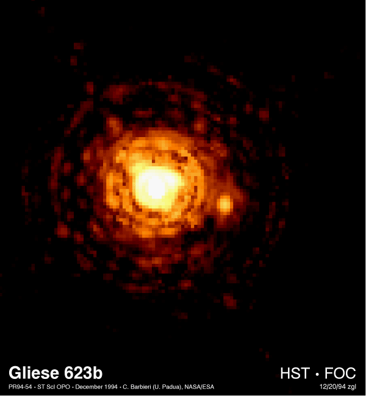
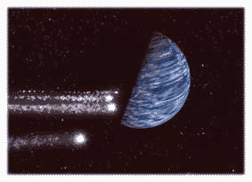

If you like to watch the stars, watch this: that faint, little white spot in the constellation of Ophiuchus. You don’t see it? Don’t worry: it will get bigger over time. For actually, it’s a star that’s coming straight at us.
For an object that could one day smash our world to bits, the star has a pretty dull name: ‘Gliese 710’. Most people probably have never heard of the thing. But that will change over time, as Gl-710 gets nearer. And nearer, and nearer. You see, Gliese 710 is rushing straight towards us, at the breathtaking speed of 50,400 kilometers per hour – almost fifty times the speed of sound.
Gliese 710 is a dull, red dwarf: a small, dim star. It only shines with four to five percent of the Sun’s luminosity, while it’s mass is only half that of the Sun. So why worry, you ask? Hold on: it’s still a STAR we’re talking about here! And that's not the kind of object you want to find in your backyard in the morning: Gliese 710 is more than fifty times as big as the Earth, and more than 100,000 times as massive. Oh, and it BURNS!
|  |
Gladly, we’ll have 1,4 million years before catastrophe strikes. What's more, Gl-710 is destined to pass us at 40,000 times the distance between Earth and the Sun, in what you could call a complete miss. But wait - there's something else.
Most likely the Death Star will mess up the pile of cosmic debris called the Oort Cloud a bit, and start throwing planet-sized chunks of rock at us. For tens of thousands of years in a row, we’d have to shelter for incoming comets. Our planet could get hit, or an exploding comet could block the Sun and trigger a devastating Ice Age – much like the ominous, hypothetical space body called Nemesis is held responsible for at least ten extinctions on our world.
Gladly, there’s also a possibility Gl-710 will do nothing nasty in particular. You see: incoming stars from many light years away are always a bit hard to predict. So in the end, Death Star may simply miss our Solar System completely.
Then again, of course it could also be the other way around. Perhaps the calculations are wrong for the worse – and Gl-710 smashes into our Solar System directly. The dreaded thing would start gobbling up planets, or kick our poor Earth away into deep space. We would be incinerated, or deep frozen, or if we’re really having a bad day, both.
And that's not everything. Gliese 710 is not the only star that’s coming our way. During the next million years, at least eight stars will come closer to us than our current closest neighbor, Proxima Centauri at 4,3 light years. One of them, a red dwarf called Barnard’s Star, will arrive in only 10,000 years time. After that, a massive twin star system called Alpha Cen A/B will come knocking at our door. Calculations show the system is massive enough to give the Oort Cloud a good stir. Better keep those hard hats within reach, folks!
And how about this? There’s always the remote possibility Gl-710 or one of the other incoming stars is surrounded by planets. And that some of these planets are inhabited worlds. As you can read elsewhere on this site, the chances that this life is intelligent are vanishingly small. But for arguments sake: suppose it is. What would it do if it found us on their way? What would you do?
As every science fiction freak can tell you: it’s probably not a good idea to be a stand in the way for some kind of Klingon civilization.
LINKS OUT
http://www.space.com/scienceastronomy/solarsystem/death_of_earth_000224.html